---
title: "Document title"
author: "my name"
format:
html:
embed-resources: true
---Homework 2
Chapter 7: Moving Beyond Linearity, ISLR
Setup
Each of your assignments will begin with the following steps.
Going to our RStudio Server at https://csgateway.cornellcollege.edu:8787/
Creating a new R project, inside your homework folder on the server, and giving it a sensible name such as homework_2 and having that project in the course folder you created.
Create a new quarto document and give it a sensible name such as hw2.
In the
YAMLadd the following (add what you don’t have). The embed-resources component will make your final renderedhtmlself-contained.
Instructions
Be sure to include the relevant R code as well as full sentences answering each of the questions (i.e. if I ask for the average, you can output the answer in R but also write a full sentence with the answer). Be sure to frequently save your files!
In this homework we will work with four packages: tidyverse which is a collection of packages for doing data analysis in a “tidy” way, tidymodels for statistical model coefficients, splines for our splines models and ISLR2 for the Boston data.
Code
Polynomial Regression
To fit a degree 4 polynomial regression model you use:
model1 <- lm(wage ~ poly(age , 4, raw = TRUE), data = wage)Cubic Spline
To fit a cubic spline (degree 3) polynomial regression model you use:
model2<- lm(wage ~ bs(age , knots = c(22, 33, 50), degree = 3), data = Wage)Use quantiles of the predictor to choose your knots. The choice should be motivated by some EDA.
Natual Cubic Spline
To fit a degree natural cubic spline.
model3 <- lm(wage ~ ns(age,df = 4), data = Wage)Instead of providing the degrees of freedom (df), you can provide knots.
Exercises
All problems are from The secondary text is: An Introduction to Statistical Learning with Applications in R by Gareth James, Daniela Witten, Trevor Hastie, and Robert Tibshirani – it is freely available online. Chapter 7. Abbreviated ISLR.
library(ISLR2)
library(ggplot2)
library(splines)
library(tidymodels)── Attaching packages ────────────────────────────────────── tidymodels 1.3.0 ──✔ broom 1.0.7 ✔ rsample 1.2.1
✔ dials 1.4.0 ✔ tibble 3.2.1
✔ dplyr 1.1.4 ✔ tidyr 1.3.1
✔ infer 1.0.7 ✔ tune 1.3.0
✔ modeldata 1.4.0 ✔ workflows 1.2.0
✔ parsnip 1.3.1 ✔ workflowsets 1.1.0
✔ purrr 1.0.4 ✔ yardstick 1.3.2
✔ recipes 1.1.1 ── Conflicts ───────────────────────────────────────── tidymodels_conflicts() ──
✖ purrr::discard() masks scales::discard()
✖ dplyr::filter() masks stats::filter()
✖ dplyr::lag() masks stats::lag()
✖ recipes::step() masks stats::step()- (ISLR, Chapter 7, Exercise 3) Suppose we fit a curve with basis functions \(b_1(X) = X,\space b_2(X) = (X − 1)^2I(X \geq 1)\). (Note that \(I(X \geq 1)\) equals 1 for \(X \geq 1\) and 0 otherwise.) We fit the linear regression model
\[Y = \beta_0 + \beta_1b_1(X) + \beta_2b_2(X) + \epsilon,\]
and obtain coefficient estimates \(\hat{\beta}_0 = 1,\space \hat{\beta}_1 = 1,\space \hat{\beta}_2 = −2\). Sketch the estimated curve between \(X = −2\) and \(X = 2\). Note the intercepts, slopes, and other relevant information.
- (ISLR, Chapter 7, Exercise 9, edited) This question uses the variables
dis(the weighted mean of distances to five Boston employment centers) andnox(nitrogen oxides concentration in parts per 10 million) from the Boston data (in packageISLR2). We will treatdisas the predictor andnoxas the response.
- Use the
poly()function to fit a cubic polynomial regression to predictnoxusingdis. Report the regression output, and plot the resulting data and polynomial fits.
model1 <- lm(nox ~ poly(dis , 3, raw = TRUE), data = Boston)
summary(model1)
Call:
lm(formula = nox ~ poly(dis, 3, raw = TRUE), data = Boston)
Residuals:
Min 1Q Median 3Q Max
-0.121130 -0.040619 -0.009738 0.023385 0.194904
Coefficients:
Estimate Std. Error t value Pr(>|t|)
(Intercept) 0.9341281 0.0207076 45.110 < 2e-16 ***
poly(dis, 3, raw = TRUE)1 -0.1820817 0.0146973 -12.389 < 2e-16 ***
poly(dis, 3, raw = TRUE)2 0.0219277 0.0029329 7.476 3.43e-13 ***
poly(dis, 3, raw = TRUE)3 -0.0008850 0.0001727 -5.124 4.27e-07 ***
---
Signif. codes: 0 '***' 0.001 '**' 0.01 '*' 0.05 '.' 0.1 ' ' 1
Residual standard error: 0.06207 on 502 degrees of freedom
Multiple R-squared: 0.7148, Adjusted R-squared: 0.7131
F-statistic: 419.3 on 3 and 502 DF, p-value: < 2.2e-16anova(model1)Analysis of Variance Table
Response: nox
Df Sum Sq Mean Sq F value Pr(>F)
poly(dis, 3, raw = TRUE) 3 4.8468 1.61562 419.34 < 2.2e-16 ***
Residuals 502 1.9341 0.00385
---
Signif. codes: 0 '***' 0.001 '**' 0.01 '*' 0.05 '.' 0.1 ' ' 1ggplot(Boston, aes(x=dis, y=nox))+
geom_point()+
geom_smooth(formula=y~poly(x,4), method="lm")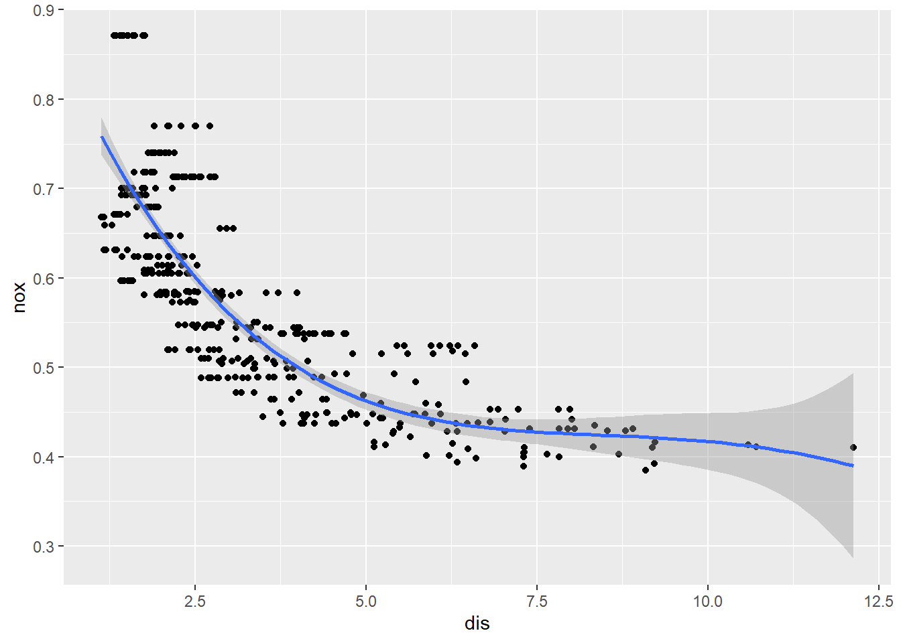
- Plot the polynomial fits for a range of different polynomial degrees (say, from 1 to 5), and report the associated residual sum of squares.
ggplot(Boston, aes(x=dis, y=nox))+
geom_point()+
geom_smooth(formula=y~poly(x,1), method="lm")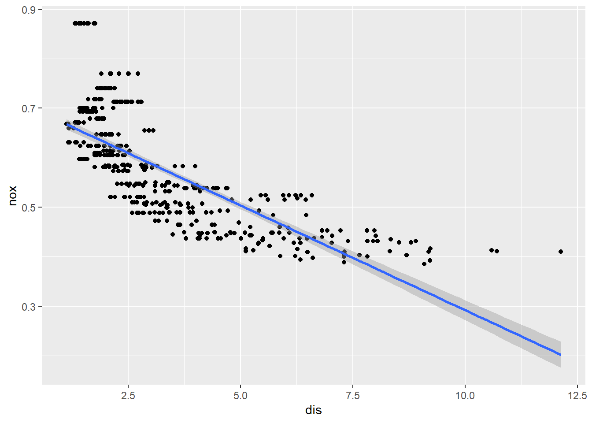
ggplot(Boston, aes(x=dis, y=nox))+
geom_point()+
geom_smooth(formula=y~poly(x,2), method="lm")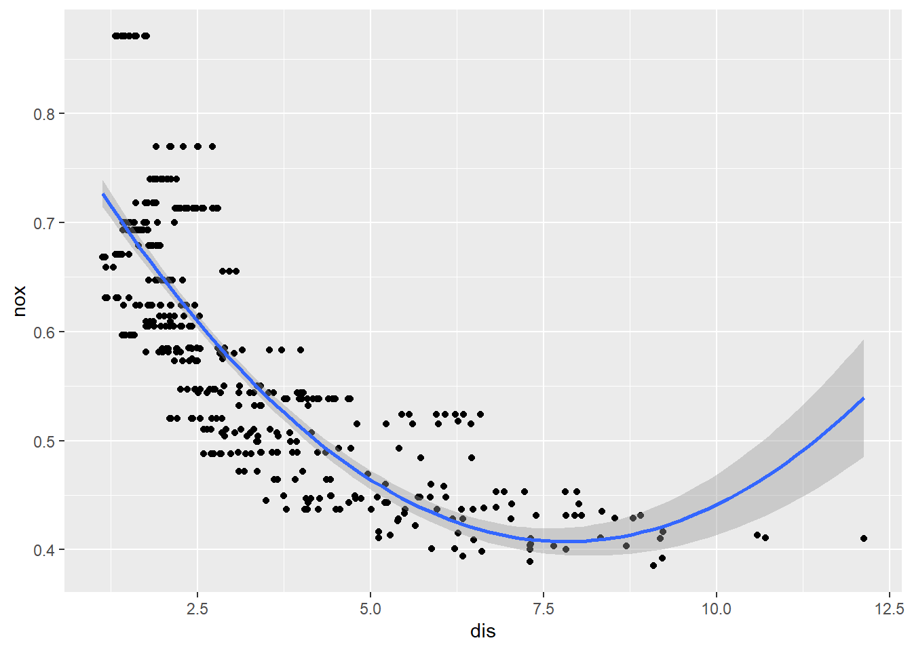
ggplot(Boston, aes(x=dis, y=nox))+
geom_point()+
geom_smooth(formula=y~poly(x,3), method="lm")
ggplot(Boston, aes(x=dis, y=nox))+
geom_point()+
geom_smooth(formula=y~poly(x,4), method="lm")
ggplot(Boston, aes(x=dis, y=nox))+
geom_point()+
geom_smooth(formula=y~poly(x,5), method="lm")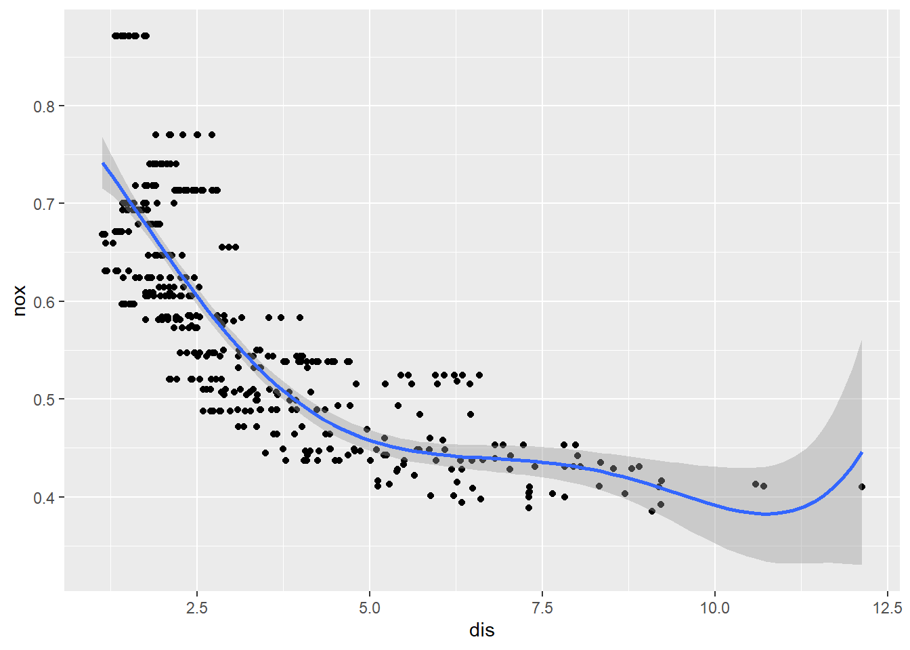
anova(lm(nox ~ poly(dis , 1, raw = TRUE), data = Boston))Analysis of Variance Table
Response: nox
Df Sum Sq Mean Sq F value Pr(>F)
poly(dis, 1, raw = TRUE) 1 4.0124 4.0124 730.43 < 2.2e-16 ***
Residuals 504 2.7686 0.0055
---
Signif. codes: 0 '***' 0.001 '**' 0.01 '*' 0.05 '.' 0.1 ' ' 1anova(lm(nox ~ poly(dis , 2, raw = TRUE), data = Boston))Analysis of Variance Table
Response: nox
Df Sum Sq Mean Sq F value Pr(>F)
poly(dis, 2, raw = TRUE) 2 4.7457 2.37285 586.43 < 2.2e-16 ***
Residuals 503 2.0353 0.00405
---
Signif. codes: 0 '***' 0.001 '**' 0.01 '*' 0.05 '.' 0.1 ' ' 1anova(lm(nox ~ poly(dis , 3, raw = TRUE), data = Boston))Analysis of Variance Table
Response: nox
Df Sum Sq Mean Sq F value Pr(>F)
poly(dis, 3, raw = TRUE) 3 4.8468 1.61562 419.34 < 2.2e-16 ***
Residuals 502 1.9341 0.00385
---
Signif. codes: 0 '***' 0.001 '**' 0.01 '*' 0.05 '.' 0.1 ' ' 1anova(lm(nox ~ poly(dis , 4, raw = TRUE), data = Boston))Analysis of Variance Table
Response: nox
Df Sum Sq Mean Sq F value Pr(>F)
poly(dis, 4, raw = TRUE) 4 4.848 1.21199 314.13 < 2.2e-16 ***
Residuals 501 1.933 0.00386
---
Signif. codes: 0 '***' 0.001 '**' 0.01 '*' 0.05 '.' 0.1 ' ' 1anova(lm(nox ~ poly(dis , 5, raw = TRUE), data = Boston))Analysis of Variance Table
Response: nox
Df Sum Sq Mean Sq F value Pr(>F)
poly(dis, 5, raw = TRUE) 5 4.8657 0.97313 254.04 < 2.2e-16 ***
Residuals 500 1.9153 0.00383
---
Signif. codes: 0 '***' 0.001 '**' 0.01 '*' 0.05 '.' 0.1 ' ' 1- Select the optimal degree for the polynomial, and explain your results.
Third degree polynomial has a good fit and increasing to 4 or 5 does not appreciably reduces the residual sum of squares.
- Use the
bs()function to fit a regression spline to predictnoxusingdis. Report the output for the fit using four degrees of freedom. How did you choose the knots? Plot the resulting fit.
I let the computer pick the knots. They are based on quantiles.
model2<- lm(nox ~ bs(dis, df=4), data = Boston)
summary(model2)
Call:
lm(formula = nox ~ bs(dis, df = 4), data = Boston)
Residuals:
Min 1Q Median 3Q Max
-0.124622 -0.039259 -0.008514 0.020850 0.193891
Coefficients:
Estimate Std. Error t value Pr(>|t|)
(Intercept) 0.73447 0.01460 50.306 < 2e-16 ***
bs(dis, df = 4)1 -0.05810 0.02186 -2.658 0.00812 **
bs(dis, df = 4)2 -0.46356 0.02366 -19.596 < 2e-16 ***
bs(dis, df = 4)3 -0.19979 0.04311 -4.634 4.58e-06 ***
bs(dis, df = 4)4 -0.38881 0.04551 -8.544 < 2e-16 ***
---
Signif. codes: 0 '***' 0.001 '**' 0.01 '*' 0.05 '.' 0.1 ' ' 1
Residual standard error: 0.06195 on 501 degrees of freedom
Multiple R-squared: 0.7164, Adjusted R-squared: 0.7142
F-statistic: 316.5 on 4 and 501 DF, p-value: < 2.2e-16ggplot(data=Boston, aes(x=dis, y=nox)) +
geom_point(aes(x=dis, y=nox)) +
geom_smooth(formula =y ~ bs(x, df=4), method="lm")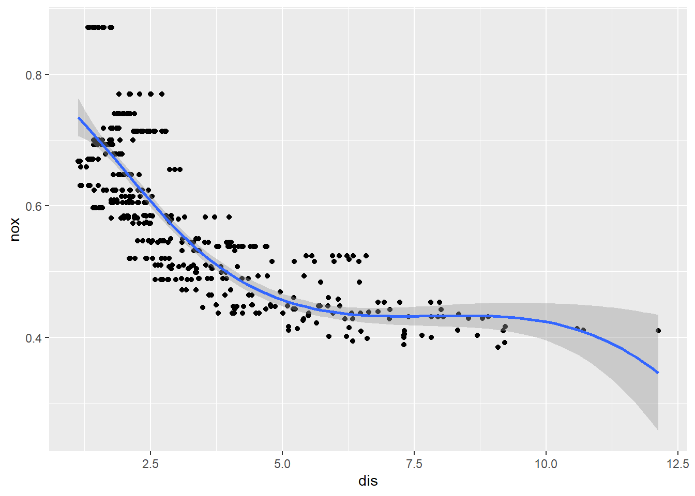
- Now fit a regression spline for a range of degrees of freedom, and plot the resulting fits and report the resulting RSS. Describe the results obtained.
anova(lm(nox ~ bs(dis, df=2), data = Boston))Warning in bs(dis, df = 2): 'df' was too small; have used 3Analysis of Variance Table
Response: nox
Df Sum Sq Mean Sq F value Pr(>F)
bs(dis, df = 2) 3 4.8468 1.61562 419.34 < 2.2e-16 ***
Residuals 502 1.9341 0.00385
---
Signif. codes: 0 '***' 0.001 '**' 0.01 '*' 0.05 '.' 0.1 ' ' 1ggplot(data=Boston, aes(x=dis, y=nox)) +
geom_point(aes(x=dis, y=nox)) +
geom_smooth(formula =y ~ bs(x, df=2), method="lm")Warning in bs(x, df = 2): 'df' was too small; have used 3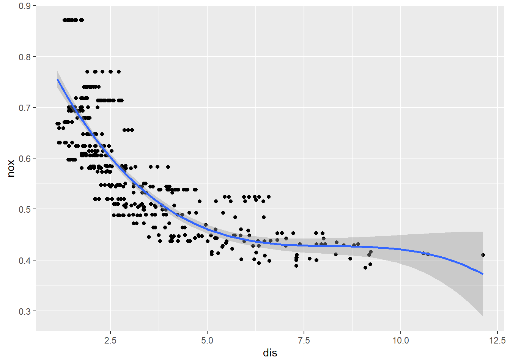
anova(lm(nox ~ bs(dis, df=3), data = Boston))Analysis of Variance Table
Response: nox
Df Sum Sq Mean Sq F value Pr(>F)
bs(dis, df = 3) 3 4.8468 1.61562 419.34 < 2.2e-16 ***
Residuals 502 1.9341 0.00385
---
Signif. codes: 0 '***' 0.001 '**' 0.01 '*' 0.05 '.' 0.1 ' ' 1ggplot(data=Boston, aes(x=dis, y=nox)) +
geom_point(aes(x=dis, y=nox)) +
geom_smooth(formula =y ~ bs(x, df=3), method="lm")
anova(lm(nox ~ bs(dis, df=4), data = Boston))Analysis of Variance Table
Response: nox
Df Sum Sq Mean Sq F value Pr(>F)
bs(dis, df = 4) 4 4.8582 1.21455 316.46 < 2.2e-16 ***
Residuals 501 1.9228 0.00384
---
Signif. codes: 0 '***' 0.001 '**' 0.01 '*' 0.05 '.' 0.1 ' ' 1ggplot(data=Boston, aes(x=dis, y=nox)) +
geom_point(aes(x=dis, y=nox)) +
geom_smooth(formula =y ~ bs(x, df=4), method="lm")
anova(lm(nox ~ bs(dis, df=5), data = Boston))Analysis of Variance Table
Response: nox
Df Sum Sq Mean Sq F value Pr(>F)
bs(dis, df = 5) 5 4.9408 0.98816 268.5 < 2.2e-16 ***
Residuals 500 1.8402 0.00368
---
Signif. codes: 0 '***' 0.001 '**' 0.01 '*' 0.05 '.' 0.1 ' ' 1ggplot(data=Boston, aes(x=dis, y=nox)) +
geom_point(aes(x=dis, y=nox)) +
geom_smooth(formula =y ~ bs(x, df=5), method="lm")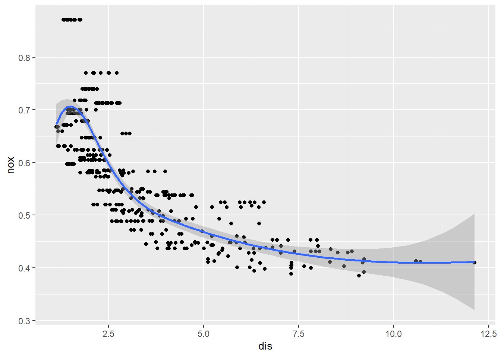
anova(lm(nox ~ bs(dis, df=6), data = Boston))Analysis of Variance Table
Response: nox
Df Sum Sq Mean Sq F value Pr(>F)
bs(dis, df = 6) 6 4.947 0.82450 224.34 < 2.2e-16 ***
Residuals 499 1.834 0.00368
---
Signif. codes: 0 '***' 0.001 '**' 0.01 '*' 0.05 '.' 0.1 ' ' 1ggplot(data=Boston, aes(x=dis, y=nox)) +
geom_point(aes(x=dis, y=nox)) +
geom_smooth(formula =y ~ bs(x, df=6), method="lm")anova(lm(nox ~ bs(dis, df=7), data = Boston))Analysis of Variance Table
Response: nox
Df Sum Sq Mean Sq F value Pr(>F)
bs(dis, df = 7) 7 4.9511 0.70730 192.49 < 2.2e-16 ***
Residuals 498 1.8299 0.00367
---
Signif. codes: 0 '***' 0.001 '**' 0.01 '*' 0.05 '.' 0.1 ' ' 1ggplot(data=Boston, aes(x=dis, y=nox)) +
geom_point(aes(x=dis, y=nox)) +
geom_smooth(formula =y ~ bs(x, df=7), method="lm")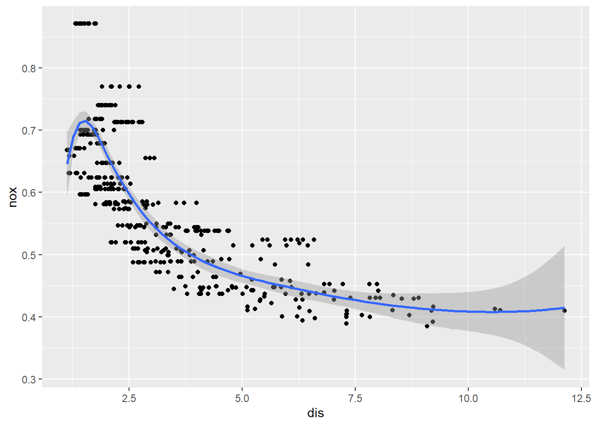
Choose the model with df=5 for the biggest drop in RSS. After that changes in RSS are very small.
- Now fit a natural regression spline for a range of degrees of freedom, and plot the resulting fits and report the resulting RSS. Describe the results obtained.
anova(lm(nox ~ ns(dis, df=3), data = Boston))Analysis of Variance Table
Response: nox
Df Sum Sq Mean Sq F value Pr(>F)
ns(dis, df = 3) 3 4.8505 1.61682 420.43 < 2.2e-16 ***
Residuals 502 1.9305 0.00385
---
Signif. codes: 0 '***' 0.001 '**' 0.01 '*' 0.05 '.' 0.1 ' ' 1ggplot(data=Boston, aes(x=dis, y=nox)) +
geom_point(aes(x=dis, y=nox)) +
geom_smooth(formula =y ~ ns(x, df=3), method="lm")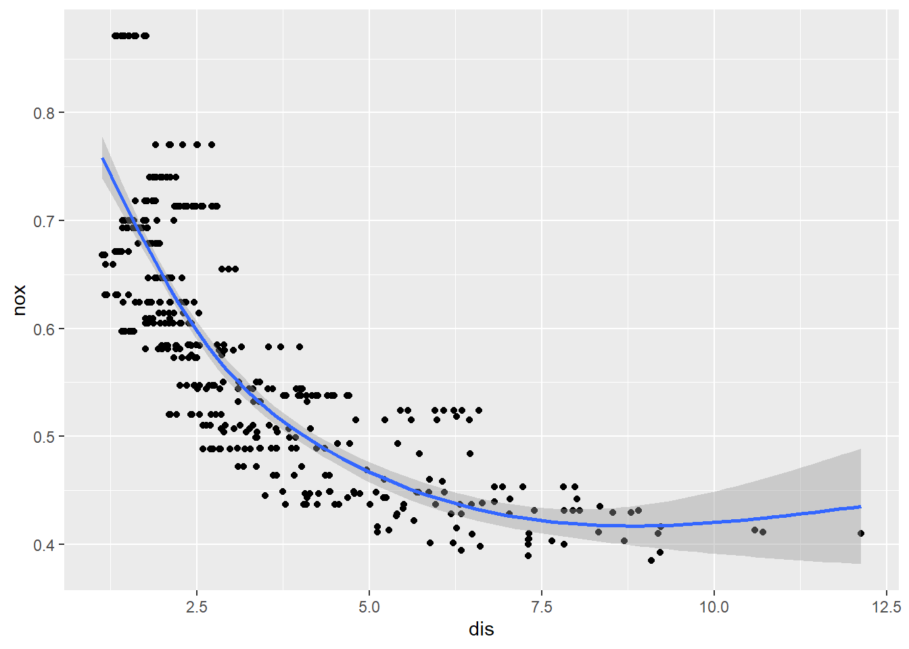
anova(lm(nox ~ ns(dis, df=4), data = Boston))Analysis of Variance Table
Response: nox
Df Sum Sq Mean Sq F value Pr(>F)
ns(dis, df = 4) 4 4.8952 1.22379 325.12 < 2.2e-16 ***
Residuals 501 1.8858 0.00376
---
Signif. codes: 0 '***' 0.001 '**' 0.01 '*' 0.05 '.' 0.1 ' ' 1ggplot(data=Boston, aes(x=dis, y=nox)) +
geom_point(aes(x=dis, y=nox)) +
geom_smooth(formula =y ~ ns(x, df=4), method="lm")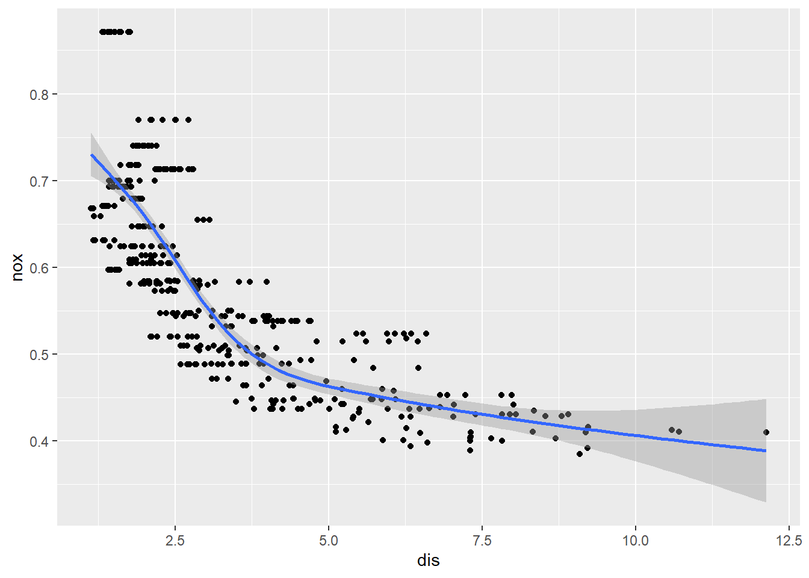
anova(lm(nox ~ ns(dis, df=5), data = Boston))Analysis of Variance Table
Response: nox
Df Sum Sq Mean Sq F value Pr(>F)
ns(dis, df = 5) 5 4.9207 0.98414 264.52 < 2.2e-16 ***
Residuals 500 1.8602 0.00372
---
Signif. codes: 0 '***' 0.001 '**' 0.01 '*' 0.05 '.' 0.1 ' ' 1ggplot(data=Boston, aes(x=dis, y=nox)) +
geom_point(aes(x=dis, y=nox)) +
geom_smooth(formula =y ~ ns(x, df=5), method="lm")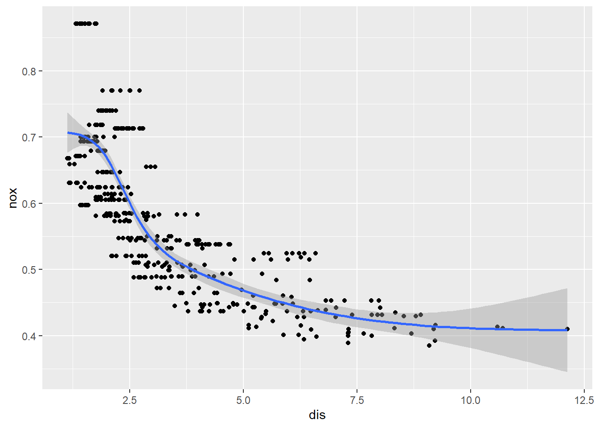
anova(lm(nox ~ ns(dis, df=6), data = Boston))Analysis of Variance Table
Response: nox
Df Sum Sq Mean Sq F value Pr(>F)
ns(dis, df = 6) 6 4.9268 0.82113 220.99 < 2.2e-16 ***
Residuals 499 1.8542 0.00372
---
Signif. codes: 0 '***' 0.001 '**' 0.01 '*' 0.05 '.' 0.1 ' ' 1ggplot(data=Boston, aes(x=dis, y=nox)) +
geom_point(aes(x=dis, y=nox)) +
geom_smooth(formula =y ~ ns(x, df=6), method="lm")anova(lm(nox ~ ns(dis, df=7), data = Boston))Analysis of Variance Table
Response: nox
Df Sum Sq Mean Sq F value Pr(>F)
ns(dis, df = 7) 7 4.9324 0.70462 189.82 < 2.2e-16 ***
Residuals 498 1.8486 0.00371
---
Signif. codes: 0 '***' 0.001 '**' 0.01 '*' 0.05 '.' 0.1 ' ' 1ggplot(data=Boston, aes(x=dis, y=nox)) +
geom_point(aes(x=dis, y=nox)) +
geom_smooth(formula =y ~ ns(x, df=7), method="lm")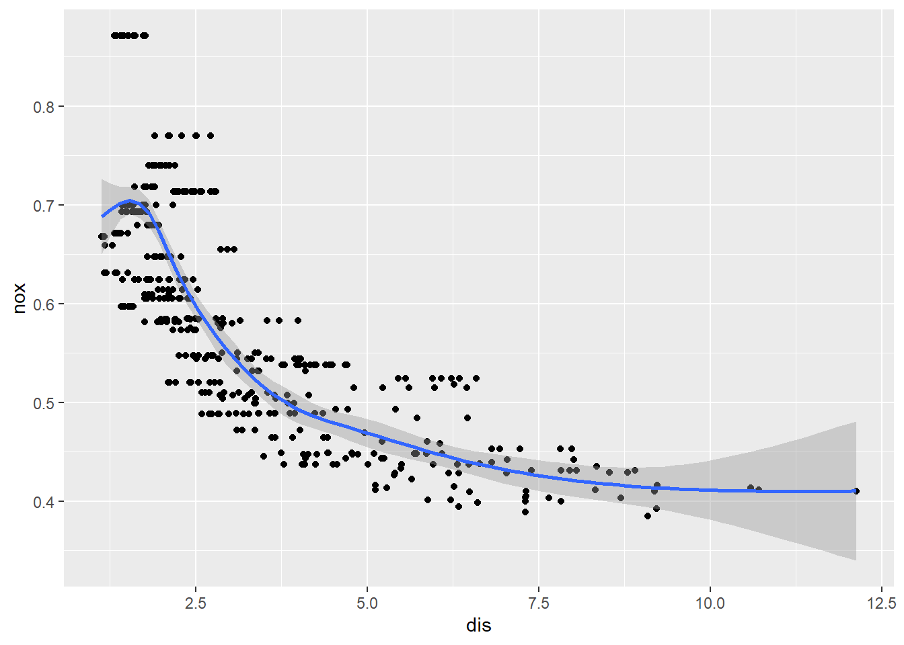
- Pick an overall best model using various metrics, complexity, and regression assumptions to make your choice. They are the same metrics used in multiple linear regression.
AIC(lm(nox ~ bs(dis, df=3), data = Boston))[1] -1370.881AIC(lm(nox ~ bs(dis, df=4), data = Boston))[1] -1371.854AIC(lm(nox ~ bs(dis, df=5), data = Boston))[1] -1392.073AIC(lm(nox ~ bs(dis, df=6), data = Boston))[1] -1391.782AIC(lm(nox ~ bs(dis, df=7), data = Boston))[1] -1390.91AIC(lm(nox ~ ns(dis, df=3), data = Boston))[1] -1371.825AIC(lm(nox ~ ns(dis, df=4), data = Boston))[1] -1381.678AIC(lm(nox ~ ns(dis, df=5), data = Boston))[1] -1386.587AIC(lm(nox ~ ns(dis, df=6), data = Boston))[1] -1386.242AIC(lm(nox ~ ns(dis, df=7), data = Boston))[1] -1385.76BIC(lm(nox ~ bs(dis, df=3), data = Boston))[1] -1349.748BIC(lm(nox ~ bs(dis, df=4), data = Boston))[1] -1346.495BIC(lm(nox ~ bs(dis, df=5), data = Boston))[1] -1362.487BIC(lm(nox ~ bs(dis, df=6), data = Boston))[1] -1357.97BIC(lm(nox ~ bs(dis, df=7), data = Boston))[1] -1352.871BIC(lm(nox ~ ns(dis, df=3), data = Boston))[1] -1350.693BIC(lm(nox ~ ns(dis, df=4), data = Boston))[1] -1356.319BIC(lm(nox ~ ns(dis, df=5), data = Boston))[1] -1357.001BIC(lm(nox ~ ns(dis, df=6), data = Boston))[1] -1352.43BIC(lm(nox ~ ns(dis, df=7), data = Boston))[1] -1347.721summary(lm(nox ~ bs(dis, df=3), data = Boston))
Call:
lm(formula = nox ~ bs(dis, df = 3), data = Boston)
Residuals:
Min 1Q Median 3Q Max
-0.121130 -0.040619 -0.009738 0.023385 0.194904
Coefficients:
Estimate Std. Error t value Pr(>|t|)
(Intercept) 0.755153 0.008283 91.168 < 2e-16 ***
bs(dis, df = 3)1 -0.498271 0.032542 -15.312 < 2e-16 ***
bs(dis, df = 3)2 -0.233520 0.036994 -6.312 6.05e-10 ***
bs(dis, df = 3)3 -0.382680 0.045455 -8.419 4.00e-16 ***
---
Signif. codes: 0 '***' 0.001 '**' 0.01 '*' 0.05 '.' 0.1 ' ' 1
Residual standard error: 0.06207 on 502 degrees of freedom
Multiple R-squared: 0.7148, Adjusted R-squared: 0.7131
F-statistic: 419.3 on 3 and 502 DF, p-value: < 2.2e-16summary(lm(nox ~ bs(dis, df=4), data = Boston))
Call:
lm(formula = nox ~ bs(dis, df = 4), data = Boston)
Residuals:
Min 1Q Median 3Q Max
-0.124622 -0.039259 -0.008514 0.020850 0.193891
Coefficients:
Estimate Std. Error t value Pr(>|t|)
(Intercept) 0.73447 0.01460 50.306 < 2e-16 ***
bs(dis, df = 4)1 -0.05810 0.02186 -2.658 0.00812 **
bs(dis, df = 4)2 -0.46356 0.02366 -19.596 < 2e-16 ***
bs(dis, df = 4)3 -0.19979 0.04311 -4.634 4.58e-06 ***
bs(dis, df = 4)4 -0.38881 0.04551 -8.544 < 2e-16 ***
---
Signif. codes: 0 '***' 0.001 '**' 0.01 '*' 0.05 '.' 0.1 ' ' 1
Residual standard error: 0.06195 on 501 degrees of freedom
Multiple R-squared: 0.7164, Adjusted R-squared: 0.7142
F-statistic: 316.5 on 4 and 501 DF, p-value: < 2.2e-16summary(lm(nox ~ bs(dis, df=5), data = Boston))
Call:
lm(formula = nox ~ bs(dis, df = 5), data = Boston)
Residuals:
Min 1Q Median 3Q Max
-0.132814 -0.039097 -0.008521 0.023493 0.197761
Coefficients:
Estimate Std. Error t value Pr(>|t|)
(Intercept) 0.67248 0.01996 33.699 < 2e-16 ***
bs(dis, df = 5)1 0.08311 0.02875 2.891 0.00401 **
bs(dis, df = 5)2 -0.13460 0.01985 -6.782 3.35e-11 ***
bs(dis, df = 5)3 -0.25505 0.03477 -7.336 8.95e-13 ***
bs(dis, df = 5)4 -0.26785 0.04059 -6.599 1.06e-10 ***
bs(dis, df = 5)5 -0.26103 0.05214 -5.007 7.69e-07 ***
---
Signif. codes: 0 '***' 0.001 '**' 0.01 '*' 0.05 '.' 0.1 ' ' 1
Residual standard error: 0.06067 on 500 degrees of freedom
Multiple R-squared: 0.7286, Adjusted R-squared: 0.7259
F-statistic: 268.5 on 5 and 500 DF, p-value: < 2.2e-16summary(lm(nox ~ bs(dis, df=6), data = Boston))
Call:
lm(formula = nox ~ bs(dis, df = 6), data = Boston)
Residuals:
Min 1Q Median 3Q Max
-0.128538 -0.037813 -0.009987 0.022644 0.195494
Coefficients:
Estimate Std. Error t value Pr(>|t|)
(Intercept) 0.65622 0.02370 27.689 < 2e-16 ***
bs(dis, df = 6)1 0.10222 0.03516 2.907 0.00381 **
bs(dis, df = 6)2 -0.02963 0.02338 -1.267 0.20571
bs(dis, df = 6)3 -0.15959 0.02791 -5.718 1.86e-08 ***
bs(dis, df = 6)4 -0.22815 0.03324 -6.864 1.99e-11 ***
bs(dis, df = 6)5 -0.26272 0.04930 -5.329 1.50e-07 ***
bs(dis, df = 6)6 -0.24002 0.05434 -4.417 1.23e-05 ***
---
Signif. codes: 0 '***' 0.001 '**' 0.01 '*' 0.05 '.' 0.1 ' ' 1
Residual standard error: 0.06062 on 499 degrees of freedom
Multiple R-squared: 0.7295, Adjusted R-squared: 0.7263
F-statistic: 224.3 on 6 and 499 DF, p-value: < 2.2e-16summary(lm(nox ~ bs(dis, df=7), data = Boston))
Call:
lm(formula = nox ~ bs(dis, df = 7), data = Boston)
Residuals:
Min 1Q Median 3Q Max
-0.12702 -0.03821 -0.01068 0.02296 0.19579
Coefficients:
Estimate Std. Error t value Pr(>|t|)
(Intercept) 0.64558 0.02633 24.516 < 2e-16 ***
bs(dis, df = 7)1 0.11238 0.04098 2.742 0.00632 **
bs(dis, df = 7)2 0.02461 0.02638 0.933 0.35138
bs(dis, df = 7)3 -0.09216 0.03119 -2.955 0.00327 **
bs(dis, df = 7)4 -0.16212 0.02829 -5.731 1.73e-08 ***
bs(dis, df = 7)5 -0.22224 0.03873 -5.738 1.66e-08 ***
bs(dis, df = 7)6 -0.24885 0.05147 -4.834 1.78e-06 ***
bs(dis, df = 7)7 -0.23091 0.05779 -3.995 7.44e-05 ***
---
Signif. codes: 0 '***' 0.001 '**' 0.01 '*' 0.05 '.' 0.1 ' ' 1
Residual standard error: 0.06062 on 498 degrees of freedom
Multiple R-squared: 0.7301, Adjusted R-squared: 0.7264
F-statistic: 192.5 on 7 and 498 DF, p-value: < 2.2e-16summary(lm(nox ~ ns(dis, df=3), data = Boston))
Call:
lm(formula = nox ~ ns(dis, df = 3), data = Boston)
Residuals:
Min 1Q Median 3Q Max
-0.12479 -0.04153 -0.01073 0.02384 0.19341
Coefficients:
Estimate Std. Error t value Pr(>|t|)
(Intercept) 0.758407 0.009798 77.406 <2e-16 ***
ns(dis, df = 3)1 -0.298767 0.014701 -20.323 <2e-16 ***
ns(dis, df = 3)2 -0.507556 0.026528 -19.133 <2e-16 ***
ns(dis, df = 3)3 -0.232845 0.027248 -8.545 <2e-16 ***
---
Signif. codes: 0 '***' 0.001 '**' 0.01 '*' 0.05 '.' 0.1 ' ' 1
Residual standard error: 0.06201 on 502 degrees of freedom
Multiple R-squared: 0.7153, Adjusted R-squared: 0.7136
F-statistic: 420.4 on 3 and 502 DF, p-value: < 2.2e-16summary(lm(nox ~ ns(dis, df=4), data = Boston))
Call:
lm(formula = nox ~ ns(dis, df = 4), data = Boston)
Residuals:
Min 1Q Median 3Q Max
-0.12940 -0.04073 -0.00805 0.02494 0.19059
Coefficients:
Estimate Std. Error t value Pr(>|t|)
(Intercept) 0.73032 0.01276 57.23 <2e-16 ***
ns(dis, df = 4)1 -0.24312 0.01373 -17.70 <2e-16 ***
ns(dis, df = 4)2 -0.27001 0.01724 -15.67 <2e-16 ***
ns(dis, df = 4)3 -0.38799 0.03179 -12.21 <2e-16 ***
ns(dis, df = 4)4 -0.30464 0.03105 -9.81 <2e-16 ***
---
Signif. codes: 0 '***' 0.001 '**' 0.01 '*' 0.05 '.' 0.1 ' ' 1
Residual standard error: 0.06135 on 501 degrees of freedom
Multiple R-squared: 0.7219, Adjusted R-squared: 0.7197
F-statistic: 325.1 on 4 and 501 DF, p-value: < 2.2e-16summary(lm(nox ~ ns(dis, df=5), data = Boston))
Call:
lm(formula = nox ~ ns(dis, df = 5), data = Boston)
Residuals:
Min 1Q Median 3Q Max
-0.135970 -0.039500 -0.007689 0.025767 0.198373
Coefficients:
Estimate Std. Error t value Pr(>|t|)
(Intercept) 0.70702 0.01541 45.868 < 2e-16 ***
ns(dis, df = 5)1 -0.16858 0.01631 -10.335 < 2e-16 ***
ns(dis, df = 5)2 -0.21583 0.02003 -10.775 < 2e-16 ***
ns(dis, df = 5)3 -0.29232 0.01857 -15.740 < 2e-16 ***
ns(dis, df = 5)4 -0.30425 0.03826 -7.952 1.23e-14 ***
ns(dis, df = 5)5 -0.29475 0.03282 -8.980 < 2e-16 ***
---
Signif. codes: 0 '***' 0.001 '**' 0.01 '*' 0.05 '.' 0.1 ' ' 1
Residual standard error: 0.061 on 500 degrees of freedom
Multiple R-squared: 0.7257, Adjusted R-squared: 0.7229
F-statistic: 264.5 on 5 and 500 DF, p-value: < 2.2e-16summary(lm(nox ~ ns(dis, df=6), data = Boston))
Call:
lm(formula = nox ~ ns(dis, df = 6), data = Boston)
Residuals:
Min 1Q Median 3Q Max
-0.135007 -0.039356 -0.006573 0.024535 0.196108
Coefficients:
Estimate Std. Error t value Pr(>|t|)
(Intercept) 0.70205 0.01744 40.263 < 2e-16 ***
ns(dis, df = 6)1 -0.10413 0.01807 -5.764 1.44e-08 ***
ns(dis, df = 6)2 -0.19401 0.02354 -8.242 1.50e-15 ***
ns(dis, df = 6)3 -0.21955 0.02053 -10.694 < 2e-16 ***
ns(dis, df = 6)4 -0.29707 0.02070 -14.352 < 2e-16 ***
ns(dis, df = 6)5 -0.28848 0.04286 -6.731 4.63e-11 ***
ns(dis, df = 6)6 -0.29134 0.03528 -8.258 1.33e-15 ***
---
Signif. codes: 0 '***' 0.001 '**' 0.01 '*' 0.05 '.' 0.1 ' ' 1
Residual standard error: 0.06096 on 499 degrees of freedom
Multiple R-squared: 0.7266, Adjusted R-squared: 0.7233
F-statistic: 221 on 6 and 499 DF, p-value: < 2.2e-16summary(lm(nox ~ ns(dis, df=7), data = Boston))
Call:
lm(formula = nox ~ ns(dis, df = 7), data = Boston)
Residuals:
Min 1Q Median 3Q Max
-0.130881 -0.038032 -0.008759 0.023295 0.195629
Coefficients:
Estimate Std. Error t value Pr(>|t|)
(Intercept) 0.68808 0.01927 35.698 < 2e-16 ***
ns(dis, df = 7)1 -0.06610 0.01972 -3.352 0.000864 ***
ns(dis, df = 7)2 -0.13239 0.02664 -4.970 9.23e-07 ***
ns(dis, df = 7)3 -0.19265 0.02292 -8.404 4.56e-16 ***
ns(dis, df = 7)4 -0.21669 0.02348 -9.228 < 2e-16 ***
ns(dis, df = 7)5 -0.29244 0.02214 -13.206 < 2e-16 ***
ns(dis, df = 7)6 -0.24900 0.04751 -5.241 2.36e-07 ***
ns(dis, df = 7)7 -0.29436 0.03683 -7.992 9.31e-15 ***
---
Signif. codes: 0 '***' 0.001 '**' 0.01 '*' 0.05 '.' 0.1 ' ' 1
Residual standard error: 0.06093 on 498 degrees of freedom
Multiple R-squared: 0.7274, Adjusted R-squared: 0.7236
F-statistic: 189.8 on 7 and 498 DF, p-value: < 2.2e-16NS 4 looks like the best (do degree 5)
Submission
When you are finished with your homework, be sure to Render the final document. Once rendered, you can download your file by:
- Finding the .html file in your File pane (on the bottom right of the screen)
- Click the check box next to the file
- Click the blue gear above and then click “Export” to download
- Submit your final html document to the respective assignment on Moodle